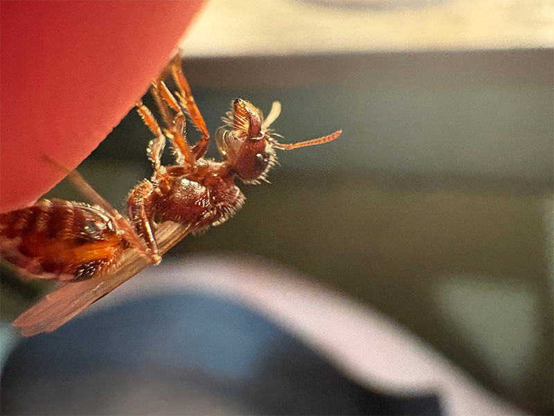

A Pogonomyrmex rugosus male:

Pogonomyrmex rugosus workers:

A Pogonomyrmex rugosus queen alate:

Pogonomyrmex rugosus nests:
Pogonomyrmex rugosus or the Rough Harvester Ant is a semi-large species of black harvester ant. They are a seed collecting species found in the southwest area of the United States and northern Mexico. They create small pebble mounds at there nest entrance. They don't have majors.
Here is some good to know info about the species!
Pogonomyrmex rugosus-Rough Harvester Ant
Pogonomyrmex rugosus is native
Pogonomyrmex rugosus is not
Pogonomyrmex rugosus larva stay naked
Pogonomyrmex rugosus is kind of both since sometimes after the queen digs her claustral chamber she will go get a few insect parts and seeds, but not always.
Pogonomyrmex rugosus nests in sandy and dry soil. They create flat, but long pebble mounds around there nest entrance often feet long and completely clear of vegetation. Outside of the nest there is usually a pile of discarded seed husks. In the morning and evening there can be hundreds of workers wandering around outside of the nest. During the the hottest part of the day the workers tend to stay in the nest to avoid the heat.
Pogonomyrmex rugosus is a seed collecting species so most of there diet is the "ant bread" they make from crushing up the seeds. They have many nest chambers filled with hundreds of seeds. They also will eat small insects dead or alive.
Pogonomyrmex rugosus fly in July, August, and September after a thunderstorm. After the queen breaks off her wings she looks for a place to dig her claustral chamber. While queens are digging there claustral chamber they pile the soil in a half circle outside the entrance which makes them easy to spot. Queens tend to gather a few seeds and sometimes insect parts to eat and help her larva grow faster. Queens usually lay 4-10 eggs for there first batch, but eat most of them over time. From egg to worker takes around 6-8 weeks on average. Alates start to appear 3-6 years after founding.
Pogonomyrmex rugosus settles territorial disputes with other colonies of Pogonomyrmex rugosus by having what's called a "wrestling match" where two workers from different colonies will push and shove each other in a show of force. However they don't actually hurt each other while doing this and just gather information on the strength of other nearby colonies. Pogonomyrmex rugosus also has a special way of breeding. Pogonomyrmex rugosus has to breed with a male of there own species to be able to produce alates, but also have to breed with a male from Pogonomyrmex barbatus to be able to create worker ants.
A Pogonomyrmex rugosus male:
Pogonomyrmex rugosus workers:
A Pogonomyrmex rugosus queen alate:
Pogonomyrmex rugosus nests: